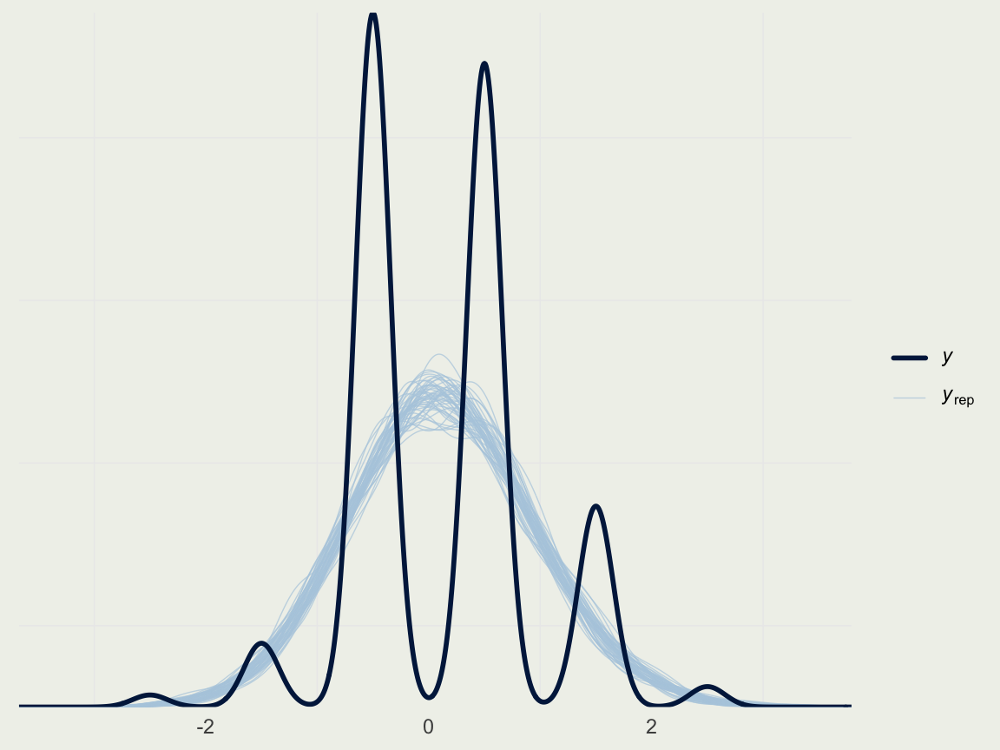
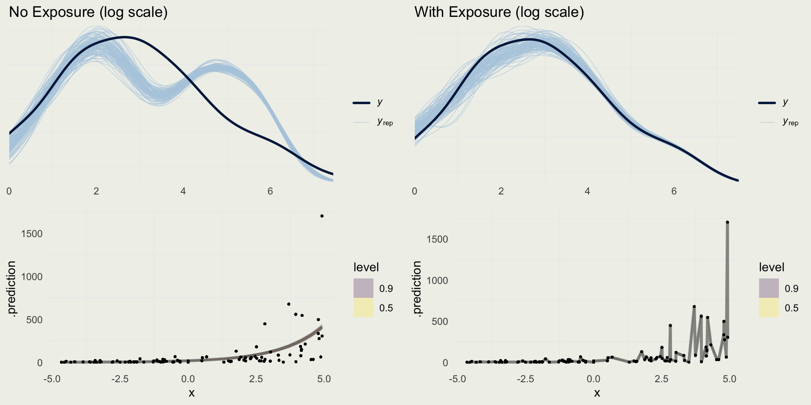
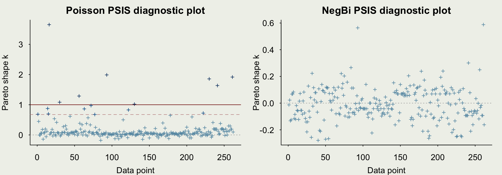

Bayesian Inference
NYU Applied Statistics for Social Science Research
Eric Novik | Spring 2024 | Lecture 6
More Linear Models and Modeling Counts
- Improving the model by thinking about the DGP
- More on model evaluation and comparison
- Modeling count data with Poisson
- Model evaluation and overdispersion
- Negative binomial model for counts
- Generalized linear models
\[ \DeclareMathOperator{\E}{\mathbb{E}} \DeclareMathOperator{\P}{\mathbb{P}} \DeclareMathOperator{\V}{\mathbb{V}} \DeclareMathOperator{\L}{\mathcal{L}} \DeclareMathOperator{\I}{\text{I}} \DeclareMathOperator*{\argmax}{arg\,max} \DeclareMathOperator*{\argmin}{arg\,min} \]
Motivating Example
- At the end of the last lecture, we saw that the linear model did not capture the relationship between height and weight very well
- That’s not surprising: the process can’t be linear as it has a natural lower and upper bound
- To remedy this situation, we have to think generatively: either biologically or geometrically/physically
- The biology of growth is very complex – we would have to think about what causes primate (or animal) growth and how growth translates into height and weight, which is likely affected by genetic and environmental factors
- Fortunately, there is a more straightforward geometrical approach
- Richard McElreath has a nice presentation in Chapter 16 of his book (2nd edition) – we reproduce a simplified version here
Deriving the model
- In the spirit of the spherical cow, we can think of a person as a cylinder
- The volume of the cylinder is: \(V = \pi r^2 h\), where \(r\) is a person’s radius and \(h\) is the height
- It seems reasonable to assume that a person’s width (\(2r\)) is proportional to the height \(h\): \(r = kh\) where \(k\) is the proportionality constant
- Therefore: \(V = \pi r^2 h = \pi (kh)^2 h = \theta h^3\) where \(\theta\) absorbed other constant terms
- If the human body has approximately the same density, weight should be proportional to Volume: \(w = kV\), \(w = k\theta h^3\)
- We will absorbe \(k\) into \(\theta\), and so \(w = \theta h^3\), so the weight is proportional to the cube of height

Deriving the model
- We can write the model in the following way: \[ \begin{eqnarray} w_i & \sim & \text{LogNormal}(\mu_i, \sigma) \\ \exp(\mu_i) & = & \theta h_i^3 \\ \theta & \sim & \text{prior}_{\theta}(.) \\ \sigma & \sim & \text{Exponetial}(1) \end{eqnarray} \]
- Weight is a positive quantity, and we give it a LogNormal distribution
- \(\exp(\mu_i)\) is the median of a LogNormal, which is where we specify our cubic relationship between weight and height
- Notice that the model for the conditional median is \(\mu_i = \log(\theta) + 3 \log(h_i)\), in other words, we do not need to estimate the coefficient on height, we only need the intercept
- In
RStanArm, we can estimate a similar model as a linear regression of log weight on log height; (in Stan, we can write this model directly)
Choosing Priors
- In our log-log linear regression, we have an intercept and coefficient on log height, which we said was 3
- Instead of fixing it at 3, we will estimate it and give it an informative prior, where most of the mass is between 2 and 4
- The implies something like \(\beta \sim \text{Normal}(3, 0.3)\)
- We will leave our \(\sigma \sim \text{Exponetial}(1)\)
- We have less intuition about the intercept, so we will give it a wider prior on a scale of centered predictors (
RStanArmcenters by default): \(\alpha \sim \text{Normal}(0, 5)\) - How do we know these priors are reasonable on the predictive scale (weight)?
- We will perform another prior predictive simulation
Prior Predictive Simulation
- Compute the new log variables:
- Run prior predictive simulation in RStanARM. You should write the R code directly.
Prior Predictive Simulation

Prior Predictive Simulation
- We can examine what this looks like on the original scale by exponentiating the predictions:
Prior Predictive Simulation
- Our intercept scale seems too wide, so we will make some adjustments:
m3 <- stan_glm(
log_w ~ log_h,
data = d,
family = gaussian,
prior = normal(3, 0.3),
prior_aux = exponential(1),
prior_intercept = normal(0, 2.5),
prior_PD = 1, # don't evaluate the likelihood
seed = 1234,
refresh = 0,
chains = 4,
iter = 600
)
d |>
add_epred_draws(m3, ndraws = 100) |>
ggplot(aes(y = weight, x = height)) +
geom_point(size = 0.5) +
geom_line(aes(y = exp(.epred), group = .draw),
alpha = 0.25, color = 'green') +
xlab("Height") + ylab("Weight") +
ggtitle("Prior Predictive Simulation")
Fitting the Model
- We can likely do better with these priors, but most of the simulations are covering the data and so we proceed to model fitting
m3 <- stan_glm(
log_w ~ log_h,
data = d,
family = gaussian,
prior = normal(3, 0.3),
prior_aux = exponential(1),
prior_intercept = normal(0, 2.5),
seed = 1234,
refresh = 0,
chains = 4,
iter = 600
)
prior_summary(m3)Priors for model 'm3'
------
Intercept (after predictors centered)
~ normal(location = 0, scale = 2.5)
Coefficients
~ normal(location = 3, scale = 0.3)
Auxiliary (sigma)
~ exponential(rate = 1)
------
See help('prior_summary.stanreg') for more details
Model Info:
function: stan_glm
family: gaussian [identity]
formula: log_w ~ log_h
algorithm: sampling
sample: 1200 (posterior sample size)
priors: see help('prior_summary')
observations: 544
predictors: 2
Estimates:
mean sd 10% 50% 90%
(Intercept) -8.0 0.1 -8.1 -8.0 -7.8
log_h 2.3 0.0 2.3 2.3 2.4
sigma 0.1 0.0 0.1 0.1 0.1
Fit Diagnostics:
mean sd 10% 50% 90%
mean_PPD 3.4 0.0 3.4 3.4 3.5
The mean_ppd is the sample average posterior predictive distribution of the outcome variable (for details see help('summary.stanreg')).
MCMC diagnostics
mcse Rhat n_eff
(Intercept) 0.0 1.0 619
log_h 0.0 1.0 621
sigma 0.0 1.0 923
mean_PPD 0.0 1.0 1436
log-posterior 0.1 1.0 529
For each parameter, mcse is Monte Carlo standard error, n_eff is a crude measure of effective sample size, and Rhat is the potential scale reduction factor on split chains (at convergence Rhat=1).Comparing to the Linear Model

Plotting Prediction Intervals

Predicting For New Data
log_h <- seq(0, 5.2, len = 500)
new_data <- tibble(log_h)
pred <- add_predicted_draws(new_data, m3)
pred |>
ggplot(aes(x = exp(log_h), y = exp(.prediction))) +
stat_lineribbon(.width = c(0.90, 0.50), alpha = 0.25) +
xlab("Height (cm)") + ylab("Weight (kg)") + ggtitle("Predictions of Weight from Height") +
geom_point(aes(y = weight, x = height), size = 0.5, alpha = 0.2, data = d)
Example: Quality of Wine
- To build up a larger regression model, we will take a look at the quality of wine dataset from the UCI machine learning repository
Example: Quality of Wine
- Our task is to predict the (subjective) quality of wine from measurements like acidity, sugar, and chlorides
- The outcome is ordinal, which should be analyzed using ordinal regression, but we will start with linear regression
d <- readr::read_delim("data/winequality-red.csv")
# remove duplicates
d <- d[!duplicated(d), ]
p1 <- ggplot(aes(x = quality), data = d)
p1 <- p1 + geom_histogram() +
ggtitle("Red wine quality ratings")
p2 <- ggplot(aes(quality, alcohol), data = d)
p2 <- p2 +
geom_point(position =
position_jitter(width = 0.2),
size = 0.3)
grid.arrange(p1, p2, nrow = 2)
Example: Quality of Wine
- As before, we will center the predictors, but this time, we will also divide by standard deviation
- This will make the coefficients comparable
- If you have binary inputs, it may make sense to divide by two standard deviations (Page 186 in Regresion and Other Stories)
- We will also center the quality score
# A tibble: 6 × 12
fixed_acidity volatile_acidity citric_acid residual_sugar chlorides
<dbl> <dbl> <dbl> <dbl> <dbl>
1 -0.524 0.932 -1.39 -0.461 -0.246
2 -0.294 1.92 -1.39 0.0566 0.200
3 -0.294 1.26 -1.19 -0.165 0.0785
4 1.66 -1.36 1.47 -0.461 -0.266
5 -0.524 0.713 -1.39 -0.535 -0.266
6 -0.236 0.385 -1.09 -0.683 -0.387
# ℹ 7 more variables: free_sulfur_dioxide <dbl>, total_sulfur_dioxide <dbl>,
# density <dbl>, pH <dbl>, sulphates <dbl>, alcohol <dbl>, quality <dbl>Example: Quality of Wine
- We can now fit our first regression to alcohol only
- After standardization, and since we don’t know much about wine, we can set weakly informative priors
Model Info:
function: stan_glm
family: gaussian [identity]
formula: quality ~ alcohol
algorithm: sampling
sample: 1000 (posterior sample size)
priors: see help('prior_summary')
observations: 1359
predictors: 2
Estimates:
mean sd 10% 50% 90%
(Intercept) 0.1 0.0 0.1 0.1 0.2
alcohol 0.4 0.0 0.4 0.4 0.4
sigma 0.7 0.0 0.7 0.7 0.7
Fit Diagnostics:
mean sd 10% 50% 90%
mean_PPD 0.1 0.0 0.1 0.1 0.2
The mean_ppd is the sample average posterior predictive distribution of the outcome variable (for details see help('summary.stanreg')).
MCMC diagnostics
mcse Rhat n_eff
(Intercept) 0.0 1.0 759
alcohol 0.0 1.0 720
sigma 0.0 1.0 905
mean_PPD 0.0 1.0 862
log-posterior 0.1 1.0 373
For each parameter, mcse is Monte Carlo standard error, n_eff is a crude measure of effective sample size, and Rhat is the potential scale reduction factor on split chains (at convergence Rhat=1).Priors in RStanArm
- When we say
prior = normal(0, 1)in RStanArm, every \(\beta\), except for the intercept will be given this prior - When setting informative priors, you may want to set a specific prior for each \(\beta\)
- Suppose your model is: \[ y_i \sim \mathsf{Normal}\left(\alpha + \beta_1 x_{1,i} + \beta_2 x_{2,i}, \, \sigma\right) \]
- And you want to put a \(\text{Normal}(-3, 1)\) on \(\beta_1\) and \(\text{Normal}(2, 0.1)\) on \(\beta_2\)
- Refer to this vignette for more information about this topic
Example: Quality of Wine
- We can look at the inference using
mcmc_areas

Example: Quality of Wine
- Let’s predict the rating at the high and low alcohol content
- On a standardized scale, that would correspond to an alcohol measurement of 4 and -2 (or about 8 and 15 on the original scale)
library(bayesplot)
d_new <- tibble(alcohol = c(-2, 4))
pred <- m1 |>
posterior_predict(newdata = d_new) |>
data.frame()
colnames(pred) <- c("low_alc", "high_alc")
pred <- tidyr::pivot_longer(pred, everything(),
names_to = "alc",
values_to = "value")
p <- ggplot(aes(x = value),
data = pred)
p + geom_density(aes(fill = alc, color = alc),
alpha = 1/4) +
geom_histogram(aes(x = quality,
y = after_stat(density)),
alpha = 1/2,
data = ds) +
xlab("Quality Score (-2.5, +2.5)") + ylab("")Example: Quality of Wine
- Naive way to show the posterior predictive check
Example: Quality of Wine
- We can classify each prediction based on the distance to the nearest rating category
map_real_number <- function(x) {
if (x < -2) {
return(-2.5)
} else if (x >= -2 && x < -1) {
return(-1.5)
} else if (x >= -1 && x < 0) {
return(-0.5)
} else if (x >= 0 && x < 1) {
return(0.5)
} else if (x >= 1 && x < 2) {
return(1.5)
} else if (x >= 2) {
return(2.5)
}
}
map_real_number <- Vectorize(map_real_number)
yrep_cat <- map_real_number(yrep1) |>
matrix(nrow = nrow(yrep1), ncol = ncol(yrep1))
ppc_dens_overlay(ds$quality,
yrep_cat[sample(nrow(yrep1), 50), ])
Example: Quality of Wine
- We can take a look at the distribution of a few statistics to check where the model is particularly strong or weak
Example: Quality of Wine
- We can also look at predictions directly, and compare them to observed data
Example: Quality of Wine
- We can now fit a larger model and compare the results
Model Info:
function: stan_glm
family: gaussian [identity]
formula: quality ~ .
algorithm: sampling
sample: 1400 (posterior sample size)
priors: see help('prior_summary')
observations: 1359
predictors: 12
Estimates:
mean sd 10% 50% 90%
(Intercept) 0.1 0.0 0.1 0.1 0.1
fixed_acidity 0.0 0.1 0.0 0.0 0.1
volatile_acidity -0.2 0.0 -0.2 -0.2 -0.2
citric_acid 0.0 0.0 -0.1 0.0 0.0
residual_sugar 0.0 0.0 0.0 0.0 0.0
chlorides -0.1 0.0 -0.1 -0.1 -0.1
free_sulfur_dioxide 0.0 0.0 0.0 0.0 0.1
total_sulfur_dioxide -0.1 0.0 -0.1 -0.1 -0.1
density 0.0 0.0 -0.1 0.0 0.0
pH -0.1 0.0 -0.1 -0.1 0.0
sulphates 0.2 0.0 0.1 0.2 0.2
alcohol 0.3 0.0 0.3 0.3 0.4
sigma 0.7 0.0 0.6 0.7 0.7
Fit Diagnostics:
mean sd 10% 50% 90%
mean_PPD 0.1 0.0 0.1 0.1 0.2
The mean_ppd is the sample average posterior predictive distribution of the outcome variable (for details see help('summary.stanreg')).
MCMC diagnostics
mcse Rhat n_eff
(Intercept) 0.0 1.0 1827
fixed_acidity 0.0 1.0 560
volatile_acidity 0.0 1.0 1056
citric_acid 0.0 1.0 1057
residual_sugar 0.0 1.0 926
chlorides 0.0 1.0 1373
free_sulfur_dioxide 0.0 1.0 1025
total_sulfur_dioxide 0.0 1.0 1044
density 0.0 1.0 551
pH 0.0 1.0 722
sulphates 0.0 1.0 1244
alcohol 0.0 1.0 678
sigma 0.0 1.0 1887
mean_PPD 0.0 1.0 1464
log-posterior 0.1 1.0 636
For each parameter, mcse is Monte Carlo standard error, n_eff is a crude measure of effective sample size, and Rhat is the potential scale reduction factor on split chains (at convergence Rhat=1).Example: Quality of Wine
- We can look at all the parameters in one plot, excluding
sigma

Example: Quality of Wine
- Did we improve the model?
- We will check accuracy using MSE for both models
- We will also check the width of posterior intervals
- Finally, we will compare the models using PSIS-LOO CV (preferred)
Example: Quality of Wine
- Comparing (Root) Mean Square Errors
- Comparing posterior intervals
Example: Quality of Wine
- Let’s estimate PSIS-LOO CV, a measure of out-of-sample predictive performance
Example: Quality of Wine
- Finally, we can compare the models using
loo_compare
GLMs and Models for Count Data
- Modeling count data is typically part of a general GLM framework
- The general setup is that we have:
- Response vector \(y\), and predictor matrix \(X\)
- Linear predictor: \(\eta = X\beta\), where \(X\) is \(N\text{x}P\) and \(\beta\) is \(P\text{x}1\). What are the dimensions of \(\eta\)?
- \(\E(y \mid X) = g^{-1}(\eta)\), where \(g\) is the link function that maps the linear predictor onto the observational scale
- For linear regression, \(g\) is the identity function (i.e., no transformation)
- The Poisson data model is \(y_i \sim \text{Poisson}(\lambda_i)\), where \(\lambda_i = \exp(X_i\beta)\), and so our link function \(g(x) = \log(x)\)
- As stated before, for one observation \(y\), \(f(y \mid \lambda) = \frac{1}{y!} \lambda^y e^{-\lambda}\)
Poisson Posterior
- To derive the posterior distribution for Poisson, we consider K regression inputs and independent priors on all \(K+1\): \(\alpha\) and \(\beta_1, \beta_2, ..., \beta_k\) \[ \begin{eqnarray} f\left(\alpha,\beta \mid y,X\right) & \propto & f_{\alpha}\left(\alpha\right) \cdot \prod_{k=1}^K f_{\beta}\left(\beta_k\right) \cdot \prod_{i=1}^N {\frac{g^{-1}(\eta_i)^{y_i}}{y_i!} e^{-g^{-1}(\eta_i)}} \\ & \propto & f_{\alpha}\left(\alpha\right) \cdot \prod_{k=1}^K f_{\beta}\left(\beta_k\right) \cdot \prod_{i=1}^N {\frac{\exp(\alpha + X_i\beta)^{y_i}}{y_i!} e^{-\exp(\alpha + X_i\beta)}} \end{eqnarray} \]
- When the rate is observed at different time scales or unit scales, we introduce an exposure \(u_i\), which multiplies the rate \(\lambda_i\)
- The data model then becomes \[ \begin{eqnarray} y_i & \sim & \text{Poisson}\left(u_i e^{X_i\beta}\right) \\ & = & \text{Poisson}\left(e^{\log(u_i)} e^{X_i\beta}\right) \\ & = &\text{Poisson}\left(e^{X_i\beta + \log(u_i)}\right) \end{eqnarray} \]
Poisson Simulation
- We can set up a forward simulation to generate Poisson data
- It’s a good practice to fit simulated data and see if you can recover the parameters from a known data-generating process
set.seed(123)
n <- 100
a <- 1.5
b <- 0.5
x <- runif(n, -5, 5)
eta <- a + x * b # could be negative
lambda <- exp(eta) # always positive
y <- rpois(n, lambda)
sim <- tibble(y, x, lambda)
p <- ggplot(aes(x, y), data = sim)
p + geom_point(size = 0.5) +
geom_line(aes(y = lambda),
col = 'red',
linewidth = 0.2) +
ggtitle("Simulated Poission Data")Fitting Simulated Data
- Complex and non-linear models may have a hard time recovering parameters from forward simulations
- The process for fitting simulated data may give some insight into the data-generating process and priors
Model Info:
function: stan_glm
family: poisson [log]
formula: y ~ x
algorithm: sampling
sample: 2000 (posterior sample size)
priors: see help('prior_summary')
observations: 100
predictors: 2
Estimates:
mean sd 10% 50% 90%
(Intercept) 1.5 0.1 1.4 1.5 1.6
x 0.5 0.0 0.5 0.5 0.5
Fit Diagnostics:
mean sd 10% 50% 90%
mean_PPD 10.7 0.5 10.1 10.7 11.3
The mean_ppd is the sample average posterior predictive distribution of the outcome variable (for details see help('summary.stanreg')).
MCMC diagnostics
mcse Rhat n_eff
(Intercept) 0.0 1.0 451
x 0.0 1.0 504
mean_PPD 0.0 1.0 1434
log-posterior 0.0 1.0 667
For each parameter, mcse is Monte Carlo standard error, n_eff is a crude measure of effective sample size, and Rhat is the potential scale reduction factor on split chains (at convergence Rhat=1).Checking Poission Assumption
- We know that for Poisson model, \(\E(y_i) = \V(y_i)\), or equivalently \(\sqrt{\E(y_i)} = \text{sd}(y_i)\)
- We can check that the prediction errors follow this trend since we have a posterior predictive distribution at each \(y_i\)
library(latex2exp)
yrep <- posterior_predict(m3)
d <- tibble(y_mu_hat = sqrt(colMeans(yrep)),
y_var = apply(yrep, 2, sd))
p <- ggplot(aes(y_mu_hat, y_var), data = d)
p + geom_point(size = 0.5) +
geom_abline(slope = 1, intercept = 0,
linewidth = 0.2) +
xlab(TeX(r'($\sqrt{\widehat{E(y_i)}}$)')) +
ylab(TeX(r'($\widehat{sd(y_i)}$)'))
Posterior Predictive Checks
Adding Exposure
- Let’s check the effect of adding an exposure variable to the DGP
n <- 100
a <- 1.5
b <- 0.5
x <- runif(n, -5, 5)
u <- rexp(n, 0.2)
eta <- a + x * b + log(u)
# or <- a + x * b
lambda <- exp(eta)
y <- rpois(n, lambda)
# or rpois(n, u * lambda)
sim_exposure <- tibble(y, x, lambda,
exposure = u)
p <- ggplot(aes(x, y), data = sim_exposure)
p + geom_point(size = 0.5) +
ggtitle("Simulated Poission Data with Exposure")Checking Predictions
- Suppose we fit the model with and without the exposure term
m4 <- stan_glm(y ~ x,
prior_intercept = normal(0, 1),
prior = normal(0, 1),
family = poisson(link = "log"),
data = sim_exposure, refresh = 0,
iter = 1200)
m5 <- stan_glm(y ~ x,
prior_intercept = normal(0, 1),
prior = normal(0, 1),
family = poisson(link = "log"),
offset = log(exposure),
refresh = 0,
data = sim_exposure, iter = 1200)
yrep_m4 <- posterior_predict(m4)
yrep_m5 <- posterior_predict(m5)
s <- sample(nrow(yrep_m4), 100)
p1 <- ppc_dens_overlay(log(sim_exposure$y + 1),
log(yrep_m4[s, ] + 1)) +
ggtitle("No Exposure (log scale)")
p2 <- ppc_dens_overlay(log(sim_exposure$y + 1),
log(yrep_m5[s, ] + 1)) +
ggtitle("With Exposure (log scale)")pred4 <- add_predicted_draws(sim_exposure, m4)
pred5 <- add_predicted_draws(sim_exposure, m5,
offset = log(sim_exposure$exposure))
p3 <- pred4 |>
ggplot(aes(x = x, y = .prediction)) +
stat_lineribbon(.width = c(0.90, 0.50),
alpha = 0.25) +
geom_point(aes(x = x, y = y), size = 0.5,
alpha = 0.2)
p4 <- pred5 |>
ggplot(aes(x = x, y = .prediction)) +
stat_lineribbon(.width = c(0.90, 0.50),
alpha = 0.25) +
geom_point(aes(x = x, y = y), size = 0.5,
alpha = 0.2)
Example: Trapping Roaches!
- This example comes from Gelman and Hill (2007)
- These data come from a pest management program aimed at reducing the number of roaches in the city apartments
- The outcome \(y\), is the number of roaches caught
- There is a pre-treatment number of roaches,
roach1, atreatmentindicator, andseniorindicator for only elderly residents in a building - There is also
exposure2, a number of days for which the roach traps were used
# rescale to make sure coefficients are approximately
# on the same scale
roaches <- roaches |>
mutate(roach100 = roach1 / 100) |>
as_tibble()
head(roaches)# A tibble: 6 × 6
y roach1 treatment senior exposure2 roach100
<int> <dbl> <int> <int> <dbl> <dbl>
1 153 308 1 0 0.8 3.08
2 127 331. 1 0 0.6 3.31
3 7 1.67 1 0 1 0.0167
4 7 3 1 0 1 0.03
5 0 2 1 0 1.14 0.02
6 0 0 1 0 1 0 Example: Trapping Roaches
- Our model has three inputs and an intercept term
- Since the traps were set for a different number of days, we will include an exposure offset \(u_i\)
- \(b_t\) is the treatment coefficient, \(b_r\) is the baseline roach level, and \(b_s\) is the senior coefficient
- We need to consider reasonable priors on all those \[ \begin{eqnarray} y_i & \sim & \text{Poisson}(u_i\lambda_i)\\ \eta_i & = & \alpha + \beta_t x_{it} + \beta_r x_{ir} + \beta_s x_{is} \\ \lambda_i & = & \exp(\eta_i) \\ \alpha & \sim & \text{Normal}(?, \, ?) \\ \beta & \sim & \text{Normal}(?, \, ?) \end{eqnarray} \]
Example: Trapping Roaches
- If we look at the exposure, the average number of days that the traps were set was about 1
- How many roaches do we expect to trap during a whole day? Hundreds would probably be on the high side, so our prior model should not be predicting, say 10s of thousands
- What is the interpretation of the intercept in this regression?
- There is no way (to my knowledge) to put a half-normal or exponential distribution on the intercept in
rstanarm, and if we putNormal(3, 1), it’s unlikely to be negative, and the number of roaches can be as high asExp(5) ~ 150\[ \begin{eqnarray} y_i & \sim & \text{Poisson}(u_i\lambda_i)\\ \eta_i & = & \alpha + \beta_t x_{it} + \beta_r x_{ir} + \beta_s x_{is} \\ \lambda_i & = & \exp(\eta_i) \\ \alpha & \sim & \text{Normal}(3, 1) \\ \beta & \sim & \text{Normal}(?, \, ?) \end{eqnarray} \]
Example: Trapping Roaches
- How large can we expect the effects to be in this regression?
- Let’s just consider treatment
- Suppose we estimate the coefficient to be -0.05
- That means it reduces roach infestation by 5% on average (exp(-0.05) = 0.95)
- What if it’s -2; that would mean an 86% reduction, an unlikely but possible outcome
- With this in mind, we will set the betas to Normal(0, 1) \[ \begin{eqnarray} y_i & \sim & \text{Poisson}(u_i\lambda_i)\\ \eta_i & = & \alpha + \beta_t x_{it} + \beta_r x_{ir} + \beta_s x_{is} \\ \lambda_i & = & \exp(\eta_i) \\ \alpha & \sim & \text{Normal}(3, 1) \\ \beta & \sim & \text{Normal}(0, \, 1) \end{eqnarray} \]
Example: Trapping Roaches
- We could do a quick sanity check using the prior predictive distribution
m6 <- stan_glm(y ~ roach100 + treatment + senior,
offset = log(exposure2),
prior_intercept = normal(3, 1),
prior = normal(0, 1),
family = poisson(link = "log"),
data = roaches,
iter = 600,
refresh = 0,
prior_PD = 1,
seed = 123)
yrep_m6 <- posterior_predict(m6)
summary(colMeans(yrep_m6)) Min. 1st Qu. Median Mean 3rd Qu. Max.
9.88 42.69 47.71 296.27 57.70 52941.62 - The median is not unreasonable, but we would not expect the max (of the average!) to be 52,000
- The numbers or not in another universe, however, so we will go with it
- Try to do what people usually do, which is put the scale on the intercept at 10 or more and scale of the betas at 5 or more, and see what you get
Example: Trapping Roaches
- We will now fit the model and evaluate the inferences
m7 <- stan_glm(y ~ roach100 + treatment + senior,
offset = log(exposure2),
prior_intercept = normal(3, 1),
prior = normal(0, 1),
family = poisson(link = "log"),
data = roaches,
iter = 600,
refresh = 0,
seed = 123)
summary(m7)
Model Info:
function: stan_glm
family: poisson [log]
formula: y ~ roach100 + treatment + senior
algorithm: sampling
sample: 1200 (posterior sample size)
priors: see help('prior_summary')
observations: 262
predictors: 4
Estimates:
mean sd 10% 50% 90%
(Intercept) 3.1 0.0 3.1 3.1 3.1
roach100 0.7 0.0 0.7 0.7 0.7
treatment -0.5 0.0 -0.5 -0.5 -0.5
senior -0.4 0.0 -0.4 -0.4 -0.3
Fit Diagnostics:
mean sd 10% 50% 90%
mean_PPD 25.6 0.4 25.1 25.6 26.2
The mean_ppd is the sample average posterior predictive distribution of the outcome variable (for details see help('summary.stanreg')).
MCMC diagnostics
mcse Rhat n_eff
(Intercept) 0.0 1.0 899
roach100 0.0 1.0 1074
treatment 0.0 1.0 950
senior 0.0 1.0 1045
mean_PPD 0.0 1.0 1219
log-posterior 0.1 1.0 574
For each parameter, mcse is Monte Carlo standard error, n_eff is a crude measure of effective sample size, and Rhat is the potential scale reduction factor on split chains (at convergence Rhat=1).Example: Trapping Roaches
- How good is this model?
- Let’s look a the basic posterior predictive check
yrep_m7 <- posterior_predict(m7)
s <- sample(nrow(yrep_m7), 100)
# on the log scale,
# so we can better see the data
p1 <- ppc_dens_overlay(log(roaches$y + 1),
log(yrep_m7[s, ] + 1))
prop_zero <- function(y) mean(y == 0)
p2 <- pp_check(m7, plotfun = "stat",
stat = "prop_zero",
binwidth = .005)
grid.arrange(p1, p2, nrow = 2)Negative Binomial
- PPCs suggest there is overdispersion in the data
- We can introduce a likelihood that doesn’t force the mean to be equal to the variance
- The following is one of the parameterizations that is used in Stan \[ \begin{eqnarray} \text{NegBinomial2}(n \, | \, \mu, \phi) &=& \binom{n + \phi - 1}{n} \, \left( \frac{\mu}{\mu+\phi} \right)^{\!n} \, \left( \frac{\phi}{\mu+\phi} \right)^{\!\phi} \\ \E(n) &=& \mu \ \ \text{ and } \ \V(n) = \mu + \frac{\mu^2}{\phi} \end{eqnarray} \]
- Notice that the variance term includes \(\mu^2 / \phi > 0\) allowing for more flexibility than in the case of Poisson
Example: Trapping Roaches
- We will now fit the model using a Negative Binomial instead of a Poisson
m8 <- stan_glm(y ~ roach100 + treatment + senior,
offset = log(exposure2),
prior_intercept = normal(3, 1),
prior = normal(0, 1),
prior_aux = exponential(1),
family = neg_binomial_2,
data = roaches,
iter = 600,
refresh = 0,
seed = 123)
summary(m8)
Model Info:
function: stan_glm
family: neg_binomial_2 [log]
formula: y ~ roach100 + treatment + senior
algorithm: sampling
sample: 1200 (posterior sample size)
priors: see help('prior_summary')
observations: 262
predictors: 4
Estimates:
mean sd 10% 50% 90%
(Intercept) 2.8 0.2 2.6 2.8 3.1
roach100 1.2 0.2 1.0 1.2 1.6
treatment -0.7 0.2 -1.0 -0.7 -0.4
senior -0.3 0.3 -0.7 -0.3 0.0
reciprocal_dispersion 0.3 0.0 0.2 0.3 0.3
Fit Diagnostics:
mean sd 10% 50% 90%
mean_PPD 68.8 82.0 24.3 42.5 138.8
The mean_ppd is the sample average posterior predictive distribution of the outcome variable (for details see help('summary.stanreg')).
MCMC diagnostics
mcse Rhat n_eff
(Intercept) 0.0 1.0 1742
roach100 0.0 1.0 1708
treatment 0.0 1.0 1204
senior 0.0 1.0 1573
reciprocal_dispersion 0.0 1.0 1604
mean_PPD 2.6 1.0 1017
log-posterior 0.1 1.0 515
For each parameter, mcse is Monte Carlo standard error, n_eff is a crude measure of effective sample size, and Rhat is the potential scale reduction factor on split chains (at convergence Rhat=1).Example: Trapping Roaches
- How good is this model?
- Let’s look at the basic posterior predictive check
Example: Trapping Roaches
- Let’s check the comparison of the out-of-sample predictive performance relative to the Poisson model
